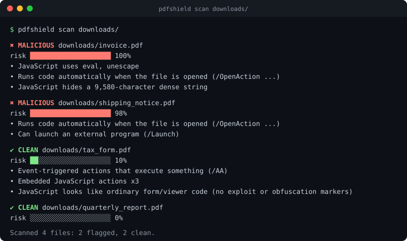

01
PDFShield
Machine-learning detector for malicious PDFs
Reads a PDF's internal structure and what its JavaScript actually does, then scores the risk and explains why. It never opens or runs the file.
- Built with
- Python · scikit-learn (Random Forest, 17 features) · Docker · GitHub Actions
- Tested on
- 22,182 real PDFs, including 13,089 real malware samples it never saw in training
- How I work
- Tests run on every push; the Docker image has no network and a read-only filesystem
76.2%recall at 1.3% false positives
